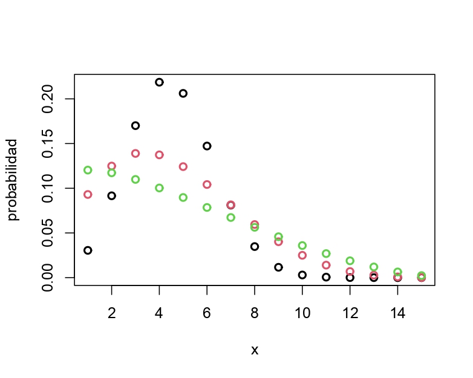

Capítulo 7 Modelo logístico
7.1 Casos de estudio
7.1.1 Mortalidad de escarabajos
Número de escarabajos muertos después de cinco horas de exposición a disulfuro de carbono gaseoso \((CS2mgl^{-1})\) en diversas concentraciones
| log.dosis | Escarabajos Total | Escarabajos Muertos |
|---|---|---|
| 1.6907 | 59 | 6 |
| 1.7242 | 60 | 13 |
| 1.7552 | 62 | 18 |
| 1.7842 | 56 | 28 |
| 1.8113 | 63 | 52 |
| 1.8369 | 59 | 53 |
| 1.8610 | 62 | 61 |
| 1.8839 | 60 | 60 |
¿Hay una relación entre la dosis y la mortalidad de escarabajos?
logdose <- c(1.6907, 1.7242, 1.7552, 1.7842, 1.8113, 1.8369, 1.8610, 1.8839)
dead <- c(6, 13, 18, 28, 52, 53, 61, 60) # numbers dead
n <- c(59, 60, 62, 56, 63, 59, 62, 60) # binomial sample sizes
Datos=data.frame(logdose,n,dead)
plot(logdose,dead/n,xlab='log dosis',ylab='proporción de muertos',ylim=c(0,1),pch=16)
Figure 7.1: Datos escarabajos.
Variable respuesta \(y_i=\sum_{j=1}^{n_i}y_{ij}/n_{i}\): proporción de escarabajos muertos.
Distribución de probabilidad: binomial:
\[ f(n_iy_i;\pi_i)=\begin{pmatrix} n_i \\ n_iy_i \end{pmatrix} \pi_i^{n_iy_i}(1-\pi_i)^{(n_i-n_iy_i)}. \]
Función de enlace:
\[ log \begin{pmatrix} \frac{\pi_i}{1-\pi_i} \end{pmatrix}=\beta_0+\beta_1log\text{dosis}_i. \]
7.1.2 Bajo peso al nacer
Se busca identificar factores de riesgo asociados con el nacimiento de niños con bajo peso (\(<2.5\) kgs). datos: data(birthwt,package= 'MASS')
Muestra:189 madres atendidas en una clínica.
Variable respuesta: Bajo peso al nacer (1 si peso \(<\) 2.5 kgs, 0 si peso \(\geq\) 2.5 kgs).
Posibles covariables:
age: edad de la madre (años).lwt: peso de la madre antes del embarazo (libras).smoke: estado de tabaquismo durante el embarazo (0 no, 1 si).ptl: historia de parto prematuro (número de casos).
Variable respuesta \(y_i\): bajo peso al nacer (0: no, 1: si)
Distribución de probabilidad: Bernoulli:
\[ f(y_i;\pi_i)=\pi_i^{y_i}(1-\pi_i)^{(1-y_i)}. \]
Función de enlace:
\[ log\begin{pmatrix} \frac{\pi_i}{1-\pi_i} \end{pmatrix}=\beta_0+\beta_1\text{age}_i+\beta_2\text{lwt}_i+\beta_3\text{smoke}_i+\beta_4\text{ptl}_i. \]
7.1.3 Estudio de teratología
Se quiere investigar los efectos de agentes químicos en el desarrollo fetal de ratas. datos: data(lirat,package = 'VGAM').
Muestra: 58 ratas hembras con dietas deficientes en hierro.
Variable respuesta: proporción de fetos muertos.
Posibles covariables:
grp: tratamiento (1: placebo, 2-4: diferentes concentraciones de inyecciones de suplementos de hierro)hb: nivel de hemoglobina.
data(lirat,package = 'VGAM')
par(mfrow=c(1,2))
#Proporcion de fetos muestos vs tratamiento
plot(lirat$grp,lirat$R/lirat$N,xlab="Tratamiento",ylab="Proporción de fetos muertos")
#Proporcion de fetos muestos vs Hemoglobina
plot(lirat$hb,lirat$R/lirat$N,xlab="Hemoglobina",ylab="Proporción de fetos muertos")Figure 7.2: Datos teratoligía
Variable respuesta \(y_i=\sum_{j=1}^{n_i}y_{ij}/n_i\): proporción de fetos muertos por hembra.
Distribución de probabilidad:binomial:
\[ f(n_iy_i;\pi_i)=\begin{pmatrix} n_i \\ n_iy_i \end{pmatrix} \pi_i^{n_iy_i}(1-\pi_i)^{(n_i-n_iy_i)}. \]
Función de enlace:
\[ log\begin{pmatrix} \frac{\pi_i}{1-\pi_i} \end{pmatrix}=\beta_0+\beta_1\text{grp}_{i1}+\beta_2\text{grp}_{i2}+\beta_3\text{grp}_{i3}+\beta_4\text{hb}_i. \]
7.2 Datos agrupados o datos no agrupados
Datos agrupados: Hay \(n_i\) observaciones que tienen los mismos valores de las covariables \(x_i\).
Datos no agrupados: Hay \(n_i=1\) (o muy pocas) observaciones por cada \(x_i\).
Las propiedades asintóticas de las inferencias para los datos no agrupados aplican cuando \(n \to \infty\).
Mientras que para datos agrupados, aplican cuando \(\sum_{i=1}^nn_i\to\infty\).
7.2.1 Datos agrupados
Para datos agrupados, \(D\) y \(X^2\) sirven para evaluar si el ajuste del modelo es bueno o no.
\(H_0\) indica que el modelo se ajusta bien a los datos, \(H_1\) lo contrario.
Si \(H_0\) es cierta (y \(\sum_{i=1}^nn_i\to\infty\)), entonces \(D\) y \(X^2\) siguen una distribución \(\chi^2\) con \((n-p)\) grados de libertad.
7.2.2 Datos no agrupados
Las distribuciones límite para \(D\) y \(X^2\) no aplican para datos no agrupados.
Tampoco para datos agrupados con \(n\) grande y con algunos \(n_i\) muy pequeños.
Se puede aproximar \(D\) y \(X^2\) agrupando \((\boldsymbol x_i,\hat{\boldsymbol y})\) por particiones del espacio de covariables o por particiones de \(\hat{\pi}\).
La falta de ajuste se puede hacer comparando el modelo propuesto contra modelos más generales.
7.3 Modelo logístico
Modelo:
\[ n_iy_i\sim\text{binomial}(n_i,\pi_i),\quad \text{donde} \quad \pi_i=g(\boldsymbol x_i\boldsymbol \beta). \]
Entonces: \(E(y_i|\boldsymbol x_i)=\pi_i\) y \(V(y_i|\boldsymbol x_i)=\pi_i(1-\pi_i)/n_i\).
Función de enlace logit: \(log\begin{pmatrix} \frac{\pi_i}{1-\pi_i} \end{pmatrix}=\boldsymbol x_i\boldsymbol \beta\).
Lo que implica que:
\[ \pi_i=g^{-1}(\boldsymbol x_i,\boldsymbol \beta)=\frac{exp(\boldsymbol x_i'\boldsymbol \beta)}{1+exp(\boldsymbol x_i'\boldsymbol \beta)}=\frac{1}{1+exp(-\boldsymbol x_i'\boldsymbol \beta)} \]
Aunque podemos utilizar otras funciones de enlace.
7.3.1 Funciones de enlace alternativas
Probit:
\[ \Phi^{-1}(\pi_i)=\boldsymbol x'_i\boldsymbol \beta\quad \pi_i=\Phi(\boldsymbol x'_i\boldsymbol \beta), \]
donde \(\Phi(\cdot)\) es función acumulativa de la distribución normal estándar.
Log-log complementaria:
\[ \pi_i=1-exp[-exp(\boldsymbol x'_i\boldsymbol \beta)] \quad log[-log(1-\pi_i)]=\boldsymbol x'_i\boldsymbol \beta. \]
Log-log:
\[ \pi_i=exp[-exp(\boldsymbol x'_i\boldsymbol \beta)] \quad -log[-log(\pi_i)]=\boldsymbol x'_i\boldsymbol \beta. \]
Figure 7.3: Estimaciones con funciones de enlace: logit(negro), probit(rojo) y cloglog(verde).
| Effect | Parm | est. | s.e | est. | s.e | est. | s.e |
|---|---|---|---|---|---|---|---|
| Intercept | \(\beta_0\) | -60.72 | 5.18 | -34.94 | 2.65 | -39.57 | 3.24 |
| Dosis | \(\beta_1\) | 34.27 | 2.91 | 19.73 | 1.49 | 22.04 | 180 |
| log.lik | -18.71 | -18.16 | -14.82 | ||||
| AIC | 41.43 | 40.32 | 33.64 |
modbw.logit = glm(low~age+lwt+ptl+smoke,family=binomial(logit),data=birthwt)
summary(modbw.logit)##
## Call:
## glm(formula = low ~ age + lwt + ptl + smoke, family = binomial(logit),
## data = birthwt)
##
## Deviance Residuals:
## Min 1Q Median 3Q Max
## -1.9339 -0.8646 -0.6816 1.2182 1.9904
##
## Coefficients:
## Estimate Std. Error z value Pr(>|z|)
## (Intercept) 1.275961 1.031063 1.238 0.2159
## age -0.048859 0.033796 -1.446 0.1483
## lwt -0.010412 0.006219 -1.674 0.0941 .
## ptl 0.695720 0.336895 2.065 0.0389 *
## smoke 0.550111 0.334455 1.645 0.1000
## ---
## Signif. codes: 0 '***' 0.001 '**' 0.01 '*' 0.05 '.' 0.1 ' ' 1
##
## (Dispersion parameter for binomial family taken to be 1)
##
## Null deviance: 234.67 on 188 degrees of freedom
## Residual deviance: 218.36 on 184 degrees of freedom
## AIC: 228.36
##
## Number of Fisher Scoring iterations: 4modbw.probit = glm(low~age+lwt+smoke+ptl,family=binomial(probit),data=birthwt)
summary(modbw.probit)##
## Call:
## glm(formula = low ~ age + lwt + smoke + ptl, family = binomial(probit),
## data = birthwt)
##
## Deviance Residuals:
## Min 1Q Median 3Q Max
## -1.9017 -0.8663 -0.6763 1.2301 1.9996
##
## Coefficients:
## Estimate Std. Error z value Pr(>|z|)
## (Intercept) 0.749466 0.603409 1.242 0.2142
## age -0.030224 0.019886 -1.520 0.1286
## lwt -0.006079 0.003576 -1.700 0.0891 .
## smoke 0.342834 0.201795 1.699 0.0893 .
## ptl 0.406405 0.202487 2.007 0.0447 *
## ---
## Signif. codes: 0 '***' 0.001 '**' 0.01 '*' 0.05 '.' 0.1 ' ' 1
##
## (Dispersion parameter for binomial family taken to be 1)
##
## Null deviance: 234.67 on 188 degrees of freedom
## Residual deviance: 218.24 on 184 degrees of freedom
## AIC: 228.24
##
## Number of Fisher Scoring iterations: 57.4 Curva característica operativa del receptor(ROC)
Para evaluar el poder predictivo del modelo se puede construir una tabla de contingencia:
| y | 0 | 1 |
|---|---|---|
| 0 | ||
| 1 |
El recuento de casillas en estas tablas permite estimar la sensibilidad=\((\hat y=1|y=1)\) y especificidad=\((\hat y=0|y=0)\).
Para datos no agrupados, la predicción \(\hat{y}=1\) cuando \(\hat{\pi_i}\geq\pi_0\)(por ejemplo 0,5).
Para \(\pi_0\), se calcula:
La sensibilidad \(P(\hat y=1|y=1)\).
La especificidad \(P(\hat y=0|y=0)\).
Dado que estos valores dependen de \(\pi_0\), se pueden calcular para todos los posibles \(\pi_0\).
Ejemplo - Datos de peso al nacer
Por ejemplo, si \(\pi_0\), tenemos:
| y | 0 | 1 |
|---|---|---|
| \(y=0\) | 123 | 7 |
| \(y=1\) | 49 | 10 |
Sensibilidad: \(10/59 = 0,169\) - especificidad: \(123/130 = 0,946\).
Ahora, si \(\pi_0= 0,3\):
| y | 0 | 1 |
|---|---|---|
| \(y=0\) | 79 | 51 |
| \(y=1\) | 19 | 40 |
Sensibilidad: \(40/59 = 0,678\) - especificidad: \(79/130 = 0,607\).
Figure 7.4: Sensibilidad (linea negra) - especificidad (linea roja)
Gráfico de \(P(\hat y=1|y=1)\) vs \(P(\hat y=0|y=0)\)

El area bajo la curva de la curva ROC (llamado índice de concordancia) es una medida del poder predictivo del modelo.
7.4.1 Ejemplo mortalidad de escarabajos
Curva ROC para el modelo logístico:
“grafico roc escarabajos”
7.4.2 Bajo peso al nacer
modbw.logit = glm(low~age+lwt+ptl+smoke,family=binomial(logit),data=birthwt)
modbw.probit = glm(low~age+lwt+smoke+ptl,family=binomial(probit),data=birthwt)
# curvas roc
#library(pROC)
ROCbw.logit = roc(birthwt$low~modbw.logit$fitted.values)
ROCbw.probit = roc(birthwt$low~modbw.probit$fitted.values)plot(ROCbw.logit)
lines(ROCbw.probit,col=2)Figure 7.5: Curva ROC para el modelo logístico (negro) y probit (rojo)
modelo logístico: \(AUC= 0,6884\).
modelo probit: \(AUC= 0,6866\).
7.5 Sobredispersión
En un experimento Bernoulli se asume que los \(n_i\) ensayos para la observación \(i,\quad y_{i1},...y_in_i\) son independientes.
Por lo tanto, tenemos que:
\[ E(y_i)=\pi_i\quad \text{y} \quad V(y_i)=\pi_i(1-\pi_i)\frac{1}{n_i}. \]
Pero, hay casos donde las observaciones \(y_{i1},...y_in_i\) están correlacionadas, es decir \(cor(y_{is},y_{it})\ne0\).
Por lo general, se asume que \(cor(y_{is},y_{it})=\phi\), para todo \(s\ne t\) (exchangeability property). Entonces:
\[ V(y_{it})=\pi_i(1-\pi_i)\quad \text{y} \quad cor(y_{it},y_{is})=\phi\pi_i(1-\pi_i). \]
En este caso, tenemos que:
\[ V(y_i)=V\begin{pmatrix} \sum_{j=1}^{n_i}\frac{y_{ij}}{n_i}\end{pmatrix}=\frac{1}{n_i^2} \left[ \sum_{j=1}^{n_i}V(y_{it})+2\sum\sum_{s<t}cov(y_{is},y_{it}) \right]=[1+\phi(n_i-1)]\frac{\pi_i(1-\pi_i)}{n_i}. \]
Si:
\(\phi=0\), \(y_i\sim binomial(n_i,\pi)\).
\(\phi>0\), tenemos sobredispersión.
\(-(n_i-1)^{-1}<\phi<0\), tenemos subdispersión (menos frecuente).
En el caso del modelo binomial, tenemos que:
\[ v(\pi_i)=\pi_i(1-\pi_i)/n_i. \]
El estadístico de \(\chi^2\) de Pearson es:
\[ X^2=\sum_{i=1}^n\frac{(y_i-\hat{\pi}_i)^2}{\pi_i(1-\pi_1)/n_i} \]
Un indicador de posible inflación de varianza es:
\[ \hat{\phi}=\frac{X^2}{n-p}. \]
Si no hay problemas de sobredispersión \(\hat{\phi}\approx1\).
7.6 Distribución beta-binomial
Modelo: \(y|\pi\sim binomial(n,\pi)\)
Donde \(\pi\sim beta(\alpha_1,\alpha_2)\), esto es:
\[ f(\pi;\alpha_1,\alpha_2)=\frac{\Gamma(\alpha_1+\alpha_2)}{\Gamma(\alpha_1)\Gamma(\alpha_2)}\pi^{\alpha_1-1}(1-\pi)^{\alpha_2-1} \]
con \(\alpha_1>0\) y \(\alpha_2>0\).
Asumiendo \(\mu=\frac{\alpha_1}{\alpha_1+\alpha_2}\) y \(\theta=1/(\alpha_1+\alpha_2)\), tenemos:
\[ E(\pi)=\mu\quad\text{y}\quad V(\pi)=\mu(1-\mu)\frac{\theta}{1+\theta}. \]
La distribución beta-binomial se obtiene al marginalizar \(y\). Esto es:
\[ f(y;n,\mu,\theta)=\int f(y|\pi)f(\pi)d\pi. \]
La función de densidad de la distribución beta-binomial es:
\[ f(y;n,\mu,\theta)=\begin{pmatrix} n \\ y \end{pmatrix}\frac{\begin{bmatrix} \Pi_{k=0}^{y-1}(\mu+k\theta)\end{bmatrix} \begin{bmatrix} \Pi_{k=0}^{n-y-1}(1-\mu+k\theta)\end{bmatrix}}{\begin{bmatrix} \Pi_{k=0}^{n-1}(1+k\theta) \end{bmatrix}}, \]
para \(y=0,1,...,n.\)
Valor esperado y varianza de \(y=s/n\):
\[ E(y)=\mu\quad\text{y}\quad V(y)=\begin{bmatrix} 1+(n-1)\frac{\theta}{1+\theta} \end{bmatrix}\mu(1-\mu)\frac{1}{\mu}. \]
Por lo cual, \(\phi=\theta/(1+\theta)\) es la correlación entre ensayos Bernoulli.
Binomial(15,0.3)(negro), beta-binomial(15,0.3,\(\phi\)=0,1)(rojo), beta-binomial(15,0.3,\(\phi\)=0,3)(verde)

7.6.1 Modelo beta-binomial
Modelo:
\[ n_iy_i|\pi_i\sim binomial(n_i,\pi_i)\\ \pi_i\sim beta(\mu_i,\phi), \]
Por lo cuál:
\[ E(y_i)=\mu_i\quad\text{y}\quad V(y_i)=[1+(n-1)\phi]\mu_i(1-\mu_i)/n_i \]
La estimación de los parámetros \((\beta,\phi)\) se hace por máxima verosimilitud.
Dado que \(\phi>0)\), el modelo beta-binomial no puede modelar datos con subdispersión.
7.6.1.1 Estudio de teratología
data(lirat,package = 'VGAM')
modlirat.binom = glm(cbind(R,N-R)~hb+as.factor(grp),family=binomial,data=lirat)
summary(modlirat.binom)##
## Call:
## glm(formula = cbind(R, N - R) ~ hb + as.factor(grp), family = binomial,
## data = lirat)
##
## Deviance Residuals:
## Min 1Q Median 3Q Max
## -4.6331 -0.9684 -0.0471 1.3945 2.8256
##
## Coefficients:
## Estimate Std. Error z value Pr(>|z|)
## (Intercept) 2.1795 0.5056 4.311 1.63e-05 ***
## hb -0.2190 0.1020 -2.148 0.031728 *
## as.factor(grp)2 -2.4748 0.5045 -4.906 9.30e-07 ***
## as.factor(grp)3 -3.1527 0.9433 -3.342 0.000832 ***
## as.factor(grp)4 -2.0520 1.0629 -1.931 0.053525 .
## ---
## Signif. codes: 0 '***' 0.001 '**' 0.01 '*' 0.05 '.' 0.1 ' ' 1
##
## (Dispersion parameter for binomial family taken to be 1)
##
## Null deviance: 509.43 on 57 degrees of freedom
## Residual deviance: 168.91 on 53 degrees of freedom
## AIC: 250.38
##
## Number of Fisher Scoring iterations: 5modlirat.betabinom =betabin(cbind(R,N-R)~as.factor(grp)+hb,data=lirat,random=~1)
modlirat.betabinom## Beta-binomial model
## -------------------
## betabin(formula = cbind(R, N - R) ~ as.factor(grp) + hb, random = ~1,
## data = lirat)
##
## Convergence was obtained after 433 iterations.
##
## Fixed-effect coefficients:
## Estimate Std. Error z value Pr(> |z|)
## (Intercept) 2.130e+00 8.676e-01 2.455e+00 1.408e-02
## as.factor(grp)2 -2.441e+00 8.508e-01 -2.869e+00 4.113e-03
## as.factor(grp)3 -2.836e+00 1.329e+00 -2.134e+00 3.287e-02
## as.factor(grp)4 -2.285e+00 1.817e+00 -1.258e+00 2.085e-01
## hb -1.694e-01 1.772e-01 -9.557e-01 3.392e-01
##
## Overdispersion coefficients:
## Estimate Std. Error z value Pr(> z)
## phi.(Intercept) 2.356e-01 6.041e-02 3.9e+00 4.813e-05
##
## Log-likelihood statistics
## Log-lik nbpar df res. Deviance AIC AICc
## -9.302e+01 6 52 1.146e+02 1.98e+02 1.997e+02AIC(modlirat.binom)## [1] 250.3777AIC(modlirat.betabinom)## df AIC AICc
## modlirat.betabinom 6 198.0319 199.6789deviance(modlirat.binom)## [1] 168.9083deviance(modlirat.betabinom)## [1] 114.5625| Modelo | Deviance | AIC | BIC |
|---|---|---|---|
| Binomial | 168.908 | 250.378 | 260.680 |
| Beta-Binomial | 114.563 | 198.032 | 210.395 |